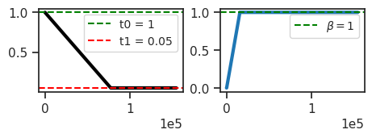
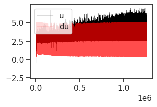
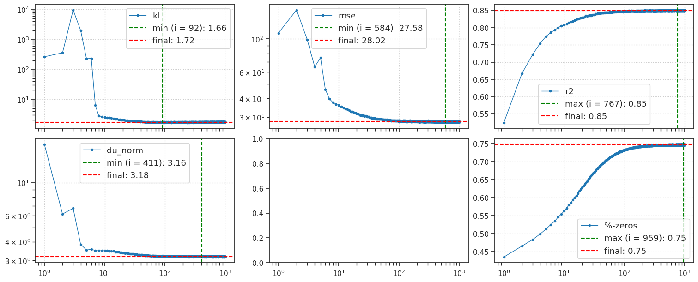
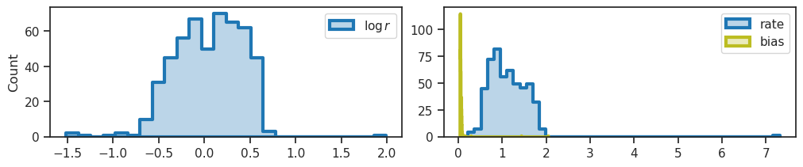
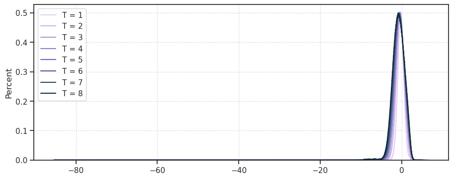
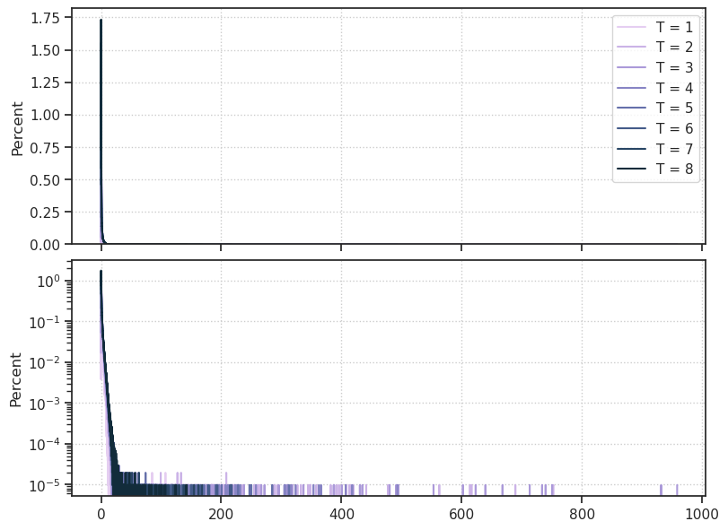
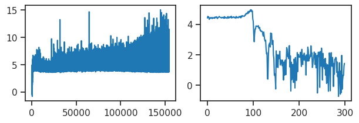
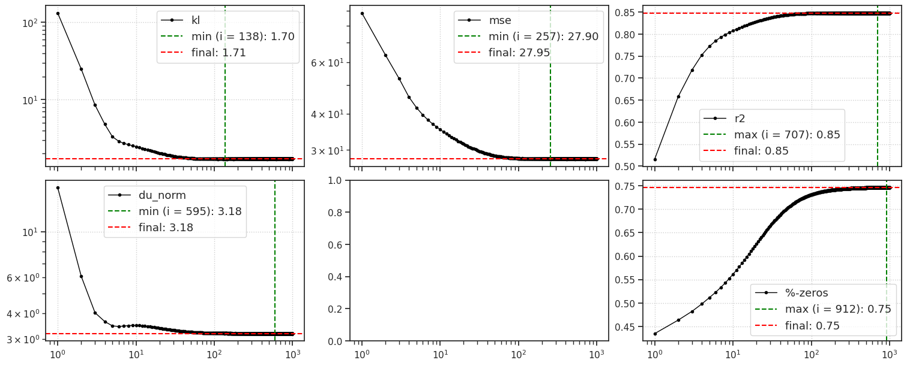

(04) conv + vH16#
Motivation: host = chewie, device = cuda:0
Show code cell source
# HIDE CODE
import os, sys
from IPython.display import display
# tmp & extras dir
git_dir = os.path.join(os.environ['HOME'], 'Dropbox/git')
extras_dir = os.path.join(git_dir, 'jb-progress-2025/_extras')
fig_base_dir = os.path.join(git_dir, 'jb-progress-2025/figs')
tmp_dir = os.path.join(git_dir, 'jb-progress-2025/tmp')
# GitHub
sys.path.insert(0, os.path.join(git_dir, '_iclr_ipvae'))
from figures.convergence import plot_convergence
from main.config_defaults import default_configs
from figures.fighelper import *
from main.train import *
# warnings, tqdm, & style
warnings.filterwarnings('ignore', category=DeprecationWarning)
warnings.filterwarnings('ignore', category=FutureWarning)
warnings.filterwarnings('ignore', category=UserWarning)
from rich.jupyter import print
%matplotlib inline
set_style()
device_idx = 0
device = f'cuda:{device_idx}'
print(f"device: {device} ——— host: {os.uname().nodename}")
device: cuda:0 ——— host: chewie
setup config#
model_type = 'poisson'
cfg_vae, cfg_tr = default_configs('vH16-wht', model_type, 'ngd|conv')
t_train = 8
cfg_vae['t_train'] = t_train
cfg_vae['kl_beta'] = 1/8 * t_train
cfg_vae['track_stats'] = True
Make model + trainer#
model = MODEL_CLASSES[model_type](CFG_CLASSES[model_type](**cfg_vae))
tr = Trainer(model, ConfigTrain(**cfg_tr), device=device)
tr.n_iters
154500
Print info#
model.print()
tr.print()
tr.show_schedules()
+-------------+------------+ | Module Name | Num Params | +-------------+------------+ | IPVAE | 1.8 Mil | | ——— | ——— | | layer | 1.8 Mil | +-------------+------------+
poisson_vH16-wht_t-8_b-1_k-512_<ngd|conv> b200-ep300-lr(0.001)_temp(0.05)_gr(200)_(2025_06_03,23:31)

model.layer.n_exp
tensor([50, 50, 50, 50, 50, 50, 50, 50], device='cuda:0', dtype=torch.int32)
print(f"{vars(tr.model.cfg)}\n\n\n{vars(tr.cfg)}")
{'prior_log_dist': 'uniform', 'clamp_prior': -2, 't_train': 8, 'kl_beta': 1.0, 'n_latents': 512, 'enc_type': 'ngd', 'dec_type': 'conv', 'recon_mode': 'mse', 'dataset': 'vH16-wht', 'dataset_name': 'vH16-wht', 'feeder': 'stationary', 'feeder_cfg': {}, 'input_sz': (1, 16, 16), 'shape': (-1, 1, 16, 16), 'init_dist': 'normal', 'init_scale': 0.0001, 'clamp_vals': {'u': (7.0,), 'du': (5.0,), 'dec': 3.45}, 'optim_sigma': False, 'stochastic': True, 'fit_prior': True, 'seed': 0, 'track_stats': True, 'base_dir': '/home/hadi/Projects/PoissonVAE', 'data_dir': '/home/hadi/Datasets', 'runs_dir': '/home/hadi/Projects/PoissonVAE/runs/poisson_vH16-wht_t-8_b-1_k-512_<ngd|conv>', 'mods_dir': '/home/hadi/Projects/PoissonVAE/models/poisson_vH16-wht_t-8_b-1_k-512_<ngd|conv>', 'results_dir': '/home/hadi/Projects/PoissonVAE/results'} {'lr': 0.001, 'epochs': 300, 'batch_size': 200, 'dataset_kws': None, 'warm_restart': 0, 'warmup_portion': 0.005, 'optimizer': 'adamax_fast', 'optimizer_kws': {'weight_decay': 0.001, 'betas': (0.9, 0.999), 'eps': 1e-08}, 'scheduler_type': 'cosine', 'scheduler_kws': {'T_max': 298.5, 'eta_min': 1e-05}, 'ema_rate': None, 'grad_clip': 200, 'chkpt_freq': 50, 'eval_freq': 20, 'log_freq': 10, 'kl_beta_min': 0.0001, 'kl_const_portion': 0.001, 'kl_anneal_portion': 0.1, 'temp_anneal_portion': 0.5, 'temp_anneal_type': 'lin', 'temp_start': 1.0, 'temp_stop': 0.05}
print(tr.model.layer.dec)
Sequential( (0): UnFlatten() (1): Cell( (skip): Identity() (ops): ModuleList( (0): ConvLayer( (act_fn): SiLU() (conv): Conv2D( (_layer): Conv2d(256, 256, kernel_size=(3, 3), stride=(1, 1), padding=(1, 1)) ) ) ) (se): SELayer( (fc): Sequential( (0): Linear(in_features=256, out_features=16, bias=True) (1): ReLU(inplace=True) (2): Linear(in_features=16, out_features=256, bias=True) (3): Sigmoid() ) ) ) (2): Cell( (skip): Sequential( (0): Upsample(scale_factor=2.0, mode='nearest') (1): Conv2D( (_layer): Conv2d(256, 128, kernel_size=(1, 1), stride=(1, 1)) ) ) (ops): ModuleList( (0): ConvLayer( (upsample): Upsample(scale_factor=2.0, mode='nearest') (act_fn): SiLU() (conv): Conv2D( (_layer): Conv2d(256, 128, kernel_size=(3, 3), stride=(1, 1), padding=(1, 1)) ) ) ) (se): SELayer( (fc): Sequential( (0): Linear(in_features=128, out_features=8, bias=True) (1): ReLU(inplace=True) (2): Linear(in_features=8, out_features=128, bias=True) (3): Sigmoid() ) ) ) (3): Cell( (skip): Identity() (ops): ModuleList( (0): ConvLayer( (act_fn): SiLU() (conv): Conv2D( (_layer): Conv2d(128, 128, kernel_size=(3, 3), stride=(1, 1), padding=(1, 1)) ) ) ) (se): SELayer( (fc): Sequential( (0): Linear(in_features=128, out_features=8, bias=True) (1): ReLU(inplace=True) (2): Linear(in_features=8, out_features=128, bias=True) (3): Sigmoid() ) ) ) (4): Cell( (skip): Sequential( (0): Upsample(scale_factor=2.0, mode='nearest') (1): Conv2D( (_layer): Conv2d(128, 64, kernel_size=(1, 1), stride=(1, 1)) ) ) (ops): ModuleList( (0): ConvLayer( (upsample): Upsample(scale_factor=2.0, mode='nearest') (act_fn): SiLU() (conv): Conv2D( (_layer): Conv2d(128, 64, kernel_size=(3, 3), stride=(1, 1), padding=(1, 1)) ) ) ) (se): SELayer( (fc): Sequential( (0): Linear(in_features=64, out_features=4, bias=True) (1): ReLU(inplace=True) (2): Linear(in_features=4, out_features=64, bias=True) (3): Sigmoid() ) ) ) (5): Cell( (skip): Identity() (ops): ModuleList( (0): ConvLayer( (act_fn): SiLU() (conv): Conv2D( (_layer): Conv2d(64, 64, kernel_size=(3, 3), stride=(1, 1), padding=(1, 1)) ) ) ) (se): SELayer( (fc): Sequential( (0): Linear(in_features=64, out_features=4, bias=True) (1): ReLU(inplace=True) (2): Linear(in_features=4, out_features=64, bias=True) (3): Sigmoid() ) ) ) (6): Cell( (skip): Sequential( (0): Upsample(scale_factor=2.0, mode='nearest') (1): Conv2D( (_layer): Conv2d(64, 32, kernel_size=(1, 1), stride=(1, 1)) ) ) (ops): ModuleList( (0): ConvLayer( (upsample): Upsample(scale_factor=2.0, mode='nearest') (act_fn): SiLU() (conv): Conv2D( (_layer): Conv2d(64, 32, kernel_size=(3, 3), stride=(1, 1), padding=(1, 1)) ) ) ) (se): SELayer( (fc): Sequential( (0): Linear(in_features=32, out_features=4, bias=True) (1): ReLU(inplace=True) (2): Linear(in_features=4, out_features=32, bias=True) (3): Sigmoid() ) ) ) (7): Cell( (skip): Identity() (ops): ModuleList( (0): ConvLayer( (act_fn): SiLU() (conv): Conv2D( (_layer): Conv2d(32, 32, kernel_size=(3, 3), stride=(1, 1), padding=(1, 1)) ) ) ) (se): SELayer( (fc): Sequential( (0): Linear(in_features=32, out_features=4, bias=True) (1): ReLU(inplace=True) (2): Linear(in_features=4, out_features=32, bias=True) (3): Sigmoid() ) ) ) (8): Conv2D( (_layer): Conv2d(32, 1, kernel_size=(1, 1), stride=(1, 1), padding=valid) ) )
Fit model#
tr.train('sfn')
Syncing run poisson_vH16-wht_t-8_b-1_k-512_/b200-ep300-lr(0.001)_temp(0.05)_gr(200)_sfn_(2025_06_03,23:31)
Warning: Could not save code info: Reference at 'refs/heads/main' does not exist
epoch # 300, avg loss: 70.945: 100%|████████████████████████████████████████████████████████████████████████████████████████████████████████████████████████████████████████████████████████████████████████| 300/300 [6:41:20<00:00, 80.27s/it]
View run poisson_vH16-wht_t-8_b-1_k-512_/b200-ep300-lr(0.001)_temp(0.05)_gr(200)_sfn_(2025_06_03,23:31) at: https://wandb.ai/yateslab/_iclr_ipvae/runs/1ac2pcl0
View project at: https://wandb.ai/yateslab/_iclr_ipvae
Synced 4 W&B file(s), 9 media file(s), 0 artifact file(s) and 39 other file(s)
View project at: https://wandb.ai/yateslab/_iclr_ipvae
Synced 4 W&B file(s), 9 media file(s), 0 artifact file(s) and 39 other file(s)
print(model.layer.n_exp)
tensor([45, 92, 81, 72, 66, 62, 59, 56], device='cuda:0', dtype=torch.int32)
u_max = np.array(tr.model.stats['u_max'])
du_max = np.array(tr.model.stats['du_max'])
fig, ax = create_figure()
ax.plot(u_max, color='k', label='u', lw=0.2)
ax.plot(du_max, color='r', label='du', alpha=0.7, lw=0.2)
ax.legend()
plt.show()

%%time
results = tr.analysis(
dl='vld',
t_total=1000,
n_data_batches=3,
)
_ = plot_convergence(results, color='C0')
100%|███████████████████████████████████| 3/3 [00:34<00:00, 11.56s/it]

CPU times: user 37.5 s, sys: 328 ms, total: 37.9 s
Wall time: 37.9 s
u0 = tonp(tr.model.layer.u_init[0].squeeze())
bias = tonp(tr.model.layer.log_bias.exp().squeeze())
fig, axes = create_figure(1, 2, (10, 2))
kws = dict(fill=True, lw=3, alpha=0.3, ax=axes[0])
sns.histplot(u0, color='C0', element='step', label=r'$\log r$', **kws)
kws = dict(fill=True, lw=3, alpha=0.3, ax=axes[1])
sns.histplot(np.exp(u0), color='C0', element='step', label='rate', **kws)
sns.histplot(bias, color='C8', element='step', label='bias', **kws)
axes[1].set(ylabel='')
add_legend(axes)
plt.show()

(bias > 0).mean()
1.0
mult = 1
results = tr.xtract_ftr(
t_total=tr.model.cfg.t_train * mult,
save_freq=mult,
n_data_batches=10,
data_batch_sz=2000,
verbose=False,
)
fig, ax = create_figure(1, 1, (9, 3.5))
pal = get_cubehelix_palette(len(results['times']), start=2.5)
for i, t in enumerate(results['times']):
sns.histplot(
results['state_0'][:, i].ravel(),
stat='percent',
element='step',
fill=False,
color=pal[i],
label=f"T = {t}",
ax=ax,
)
ax.legend(loc='upper left')
ax.grid()
plt.show()
fig, axes = create_figure(2, 1, (8, 5.8), sharex='col')
for i, t in enumerate(results['times']):
for ax in axes.flat:
sns.histplot(
np.exp(results['state_0'][:, i].ravel()),
stat='percent',
element='step',
fill=False,
color=pal[i],
label=f"T = {t}",
ax=ax,
)
axes[0].legend()
axes[1].set(yscale='log')
add_grid(axes)
plt.show()


pal
grad = np.array(list(tr.stats['grad'].values()))
fig, axes = create_figure(1, 2)
axes[0].plot(np.log(grad))
axes[1].plot(np.log(grad)[:300]);

(grad > 100).sum()
73745
%%time
results = tr.analysis(
dl='vld',
t_total=1000,
n_data_batches=-1,
)
_ = plot_convergence(results, color='k')
100%|███████████████████████████████| 130/130 [24:57<00:00, 11.52s/it]

CPU times: user 26min 4s, sys: 11.9 s, total: 26min 16s
Wall time: 26min 15s